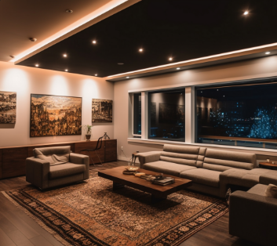
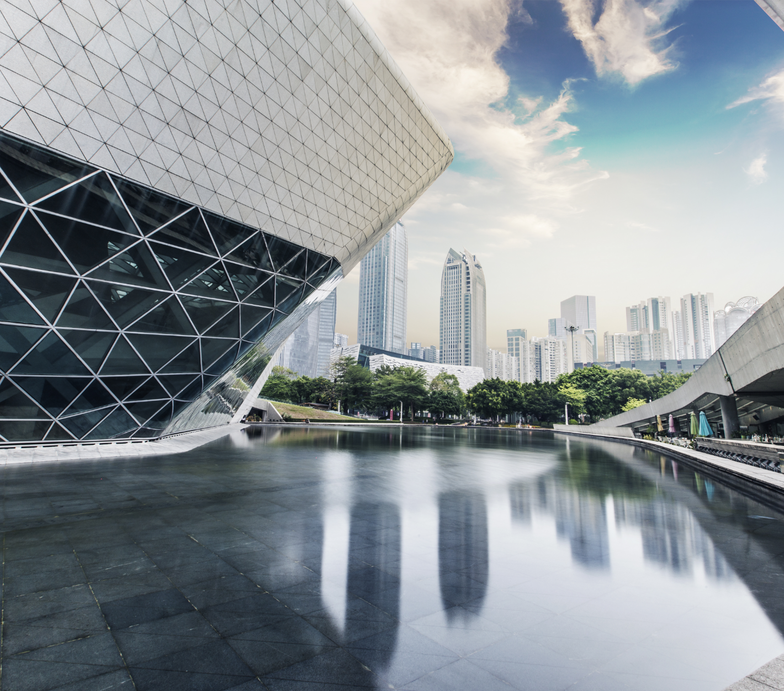

Architecture Design
Architecture design is the art of creating functional and aesthetic structures. Architects blend form and function to shape our built environment. They consider space, materials, and human needs to design structures that inspire and serve. Architecture embodies culture, history, and innovation, shaping the way we live, work, and experience the world. Architects envision and realize iconic landmarks, sustainable buildings, and transformative spaces. From ancient wonders like the Pyramids to modern marvels like the Burj Khalifa, architecture reflects our collective aspirations and leaves an indelible mark on society.

